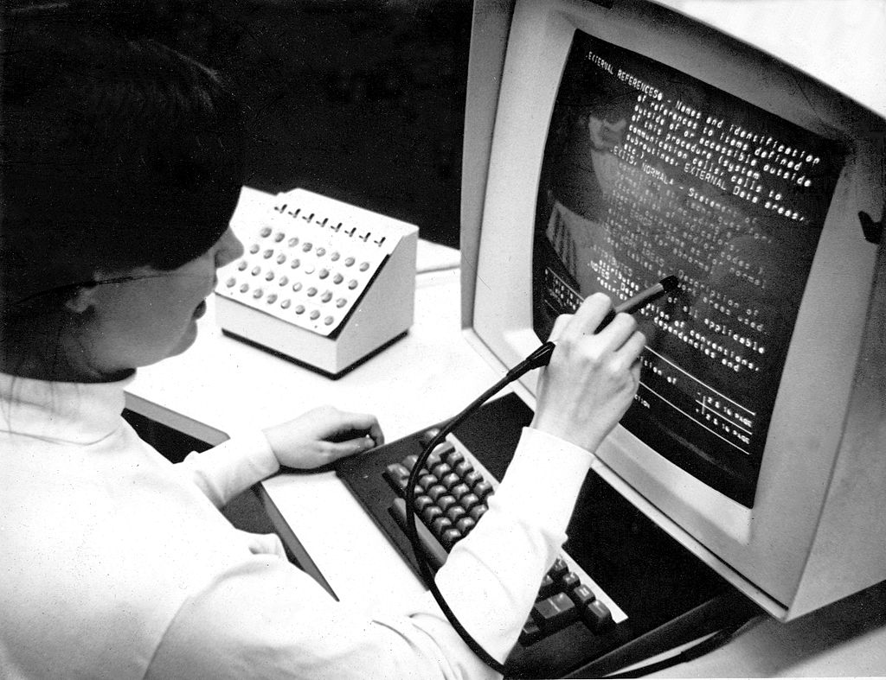
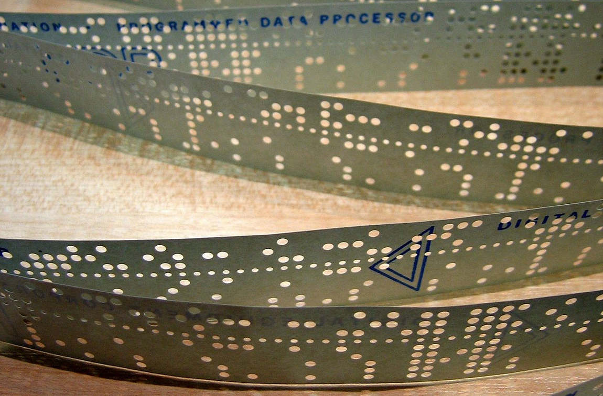

Informatika
definíció:
Az informatika önálló tudományág, amely a különböző eszközökkel – de különösen a számítógéppel – megvalósított információkezeléssel, azaz az információ megszerzésével, (gyűjtésével), feldolgozásával, tárolásával, sokszorosításával és továbbításával foglalkozik.
Az informatika az a diszciplína, interdiszciplináris szakterület, amely magába foglalja a szakterületi alkalmazás struktúráit és jellegzetességeit, s olyan tudományágakra támaszkodik, mint a számítógép-tudomány, információtudomány, információmenedzsment, rendszertervezés, matematika, statisztika, kölcsönhatás ember és számítógép között, orvostudomány, nyelvtudomány, lélektan.


Önálló tudományág
Az informatika, mint önálló tudományág megjelenését az 1950-es években a kibernetika és a rendszerelmélet-, majd az 1960-as évek elején a számítógép-tudomány előzte meg. A kibernetika tárgyát a különböző rendszerekben érvényesülő vezérlés, a rendszerelmélet tárgyát a különböző rendszerek általános törvényszerűségei, míg a számítógép-tudomány tárgyát maga a számítógép, mint eszköz képezte, illetve képezi.
Az informatika részben vagy egészben lefedi, de nem tévesztendő össze:
- sem a számítógép-tudománnyal (computer science), amelynek tárgyát maga a számítógép, mint eszköz képezi, szemben az informatikával, amely más információkezelő eszközöket (így például telefont, telefaxot stb.), sőt annak társadalmi hatásait is vizsgálja
- sem a számítástudománnyal (computing science), amely az informatika matematikai alapjai köré csoportosul, és a számítások alapvető természetének megértésére irányul, mely számos alkalmazáshoz vezet a hatékony algoritmusok elemzésében és tervezésében, valamint a megbízható hardver- és szoftverrendszerek tervezésére és ellenőrzésére szolgáló formális módszerek fejlesztésében
- sem a kibernetikával, amely nemcsak az informatikai rendszerek-, hanem minden rendszertípus vezérlésével foglalkozik,[2] és amely a szabályozás, vezérlés, információfeldolgozás és továbbítás általános törvényeit kutatja
- sem a számítástechnikával, amely az automatizált adatfeldolgozás eszközeivel és azok különböző területeken való használatával (például a számítógép építése és azok programozása) foglalkozó elméleti és alkalmazott műszaki tudomány
- sem az információelmélettel, amely az információval, mint az új ismeretté értelmezett adattal foglalkozó matematikai, illetve hírközlési tudományterület. Főként az információ keletkezésével, struktúrájával, kezelésével, tárolásával, elérésével és továbbításával foglalkozikÁbra
|